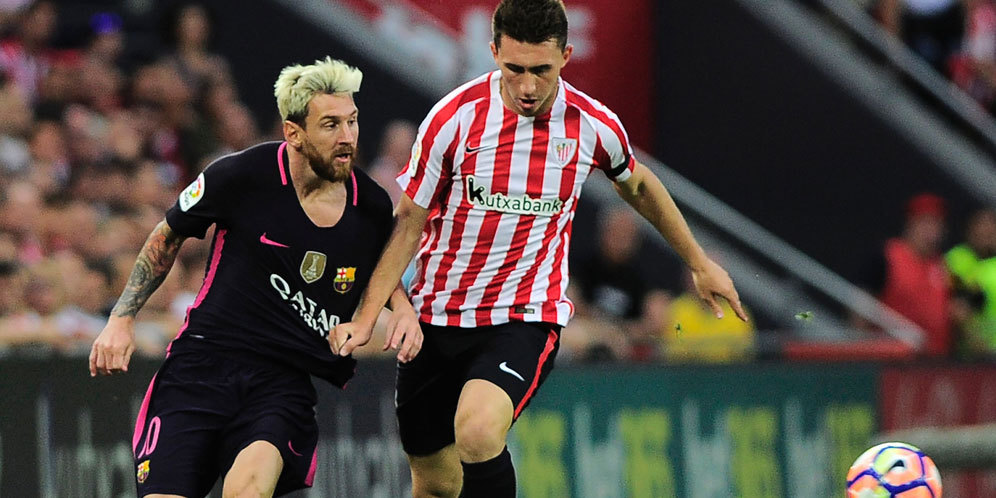

Rendy Baskara
Pemuda Indonesia 2016

Highlights La Liga: Athletic Bilbao 0-1 Barcelona
Senin, 29-08-2016 04:47
0
0Share
Tweet
Highlights La Liga: Athletic Bilbao 0-1 Barcelona
Athletic Bilbao vs Barcelona © AFP
Bola.net - Barcelona membawa pulang tiga poin dari kandang Athletic Bilbao setelah memetik kemenangan tipis 0-1 di San Mames, Senin (29/8). Gol satu-satunya dalam laga pekan kedua ini dicetak oleh Ivan Rakitic.
Menerima umpan lambung dari Arda Turan dari sisi kiri, Rakitic bergerak di dalam kotak penalti dan menanduk bola dengan kepala yang merobek gawang Iraizoz. Pada menit 21, maka Barca unggul 0-1.
Setelah itu, banyak peluang tercipta dari kedua kubu. Namun hingga pertandingan usai, skor tak berubah. Dengan hasil ini, Barca menduduki peringkat kedua di klasemen La Liga sementara.